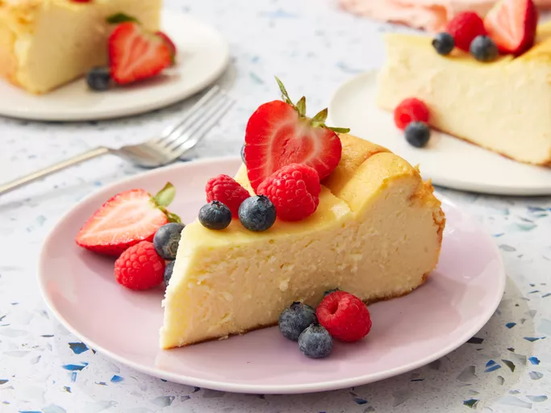

Italian Cream Cheese and Ricotta Cheesecake

Description
A luscious, creamy cheesecake combining rich cream cheese and light ricotta, enhanced with a hint of vanilla and a buttery graham cracker crust. Perfect for any occasion, this dessert is both indulgent and satisfying.
Ingredients
The Crust:
- 1 ½ cups graham cracker crumbs
- ⅓ cup granulated sugar
- ½ cup unsalted butter, melted
For the Filling:
- 16 oz cream cheese, softened
- 15 oz ricotta cheese
- 1 cup granulated sugar
- 3 large eggs
- 2 tsp vanilla extract
- 1 tsp lemon juice
- ¼ cup all-purpose flour (optional for thicker texture)
Steps:
- Prepare the Crust: Preheat the oven to 325°F (160°C). In a bowl, mix graham cracker crumbs, sugar, and melted butter until combined. Press the mixture into the bottom of a springform pan and bake for 10 minutes. Let cool.
- Make the Filling: In a large bowl, beat the cream cheese and ricotta until smooth. Gradually add sugar, then mix in the eggs one at a time, followed by vanilla, lemon juice, and flour if using.
- Bake the Cheesecake: Pour the filling over the cooled crust. Bake for 55-60 minutes or until the edges are set but the center is slightly jiggly. Turn off the oven and let the cheesecake cool inside for an hour.
- Chill and Serve: Refrigerate the cheesecake for at least 4 hours or overnight before removing from the pan and slicing. Enjoy!